Radar technology has no single inventor. It is better understood as a joint effort by scientists from several nations who often worked collaboratively. Along the way there were some interesting milestones, marked by the discovery of important basic knowledge and important inventions. The pages that follow trace a few of them.
1865. The Scottish physicist James Clerk Maxwell presents his electromagnetic theory of light, a description of electromagnetic waves and their propagation properties.
James Clerk Maxwell (1831 to 1879) was a physicist and mathematician from Scotland. He became famous for his mathematical description of the magnetic and electric fields known as Maxwell's equations.
Maxwell relied on the relationship between the movement of a magnet and the voltage induced in an electrical conductor, which later became the law of induction, discovered experimentally by Michael Faraday.
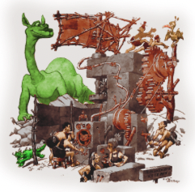
Faraday spoke of individual lines of force, which the moving magnet pulls behind it. Maxwell, on the other hand, imagined that the entire space around the magnet was filled with a force field. Complicated differential equations were required to calculate this force field. Maxwell also attempted to define laws governing the behavior of any system of electrically charged particles, given their current position and velocity and the value of the field at all its points.
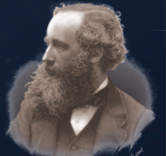
Having achieved this, he found that Faraday's experimentally found laws could not be complete, that the equations were ambiguous and led to no definite result except by assuming that not only a magnet in motion generates an electric field (and thus an electric current in the conductor), but also that a moving electric charge creates a very small magnetic field. With this additional knowledge, scientists could now set up closed unique equations.
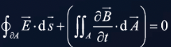
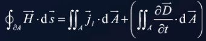
One of the most surprising results of these equations was that electric fields and magnetic fields can be set in motion in waves with a well-defined velocity that depends on the strength of the electric field created by a moving magnet. This means that the desired speed of the waves is equal to the speed one gives to a magnet if the generated electric field is to be of the same energy as its own magnetic field. This speed was already known, and Maxwell pointed out that it was in close agreement with speeds then attributed to light. He therefore made the assertion that the light waves were of electromagnetic origin.
These purely mathematical equations thus predict the existence of electromagnetic waves. Their existence was only confirmed 20 years later by experiments by Heinrich Rudolf Hertz, and it forms the basis of all radio and radar technology. Today, Maxwell's equations are no longer used in this complicated integral representation. The so-called Nabla representation (mathematical sign as the inverted delta) is preferred.
1886. The German physicist Heinrich Rudolf Hertz (1857 to 1894) discovered electromagnetic waves and thereby proved Maxwell's theory.
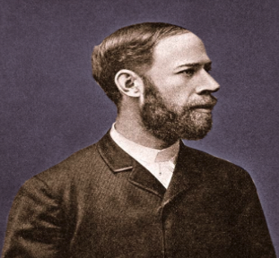
In 1887, Heinrich Hertz designed a brilliant series of experiments to experimentally confirm Maxwell's wave theory. He used a transmitter with a small gap as a spark gap connected to an induction coil for high-voltage generation. Hertz argued that if Maxwell's predictions were correct, electromagnetic waves would have to be transmitted with each series of sparks.
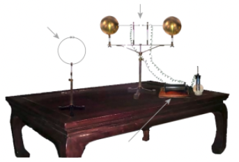
The primary power supply consisted of galvanic cells. A magnetically self-interrupting coil fed an induction coil, creating a high voltage. A spark gap works as a transmitter, which generates electromagnetic waves. A resonator circuit with a tiny spark gap was able to register the electromagnetic waves. With this simple but ingenious experimental setup, Heinrich Hertz was able to demonstrate the electromagnetic waves predicted by Maxwell. In further experiments, he was also able to prove the properties similar to light, such as reflection and the possibility of bundling in a concave mirror.
1897. The Italian Guglielmo Marconi was the first to bridge large distances with electromagnetic waves. Today he is regarded as a pioneer of wireless communication.
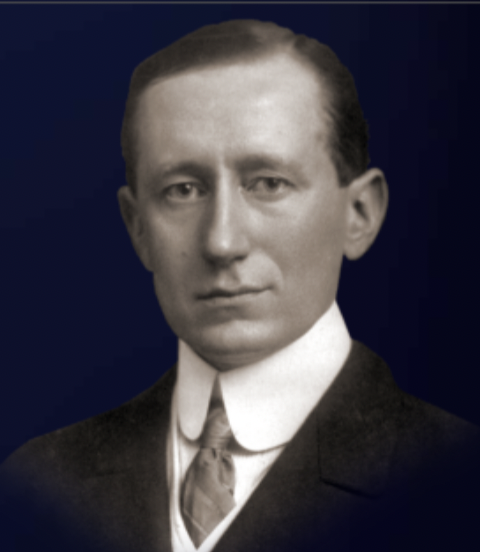
Guglielmo Marconi (1874 to 1937) was an Italian radio pioneer. Marconi was interested in the research of Maxwell and Hertz on the propagation of electromagnetic waves. In 1895 he developed a grounded transmitter antenna that could send signals to a point 2,400 meters away. In his experiments he used a wire tied to a wooden tent pole.
Fun fact: The word for antenna is derived from the Italian name for tent pole, l'antenna centrale.
Marconi traveled to England in 1896. There he convinced the director general of the postal administration, William Preece, of the benefits of his system of wireless telegraphy and had the process patented. In 1899 he succeeded in establishing the first wireless connection across the English Channel, and in 1901 the first transatlantic radio transmission.
Marconi shared the 1909 Nobel Prize in Physics with German physicist Karl Ferdinand Braun for his work on wireless communications. In 1935 he received a professorship for the chair of radio waves at the University of Rome.
1900. Nikola Tesla suggested that the reflection of electromagnetic waves can be used to detect moving objects.
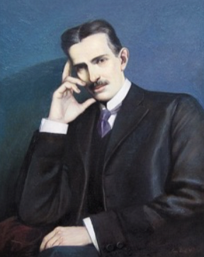
1904. The German engineer Christian Hulsmeyer invented the telemobiloscope, a device for monitoring traffic on the water. It measures the angles of electromagnetic waves sent to and from a metal object (in this case a ship) and allows the distance to be calculated. This is the first practical radar experiment documented.
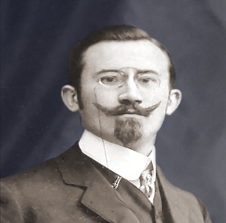
Christian Hulsmeyer (1881 to 1957) was a German inventor and is considered the discoverer of the radar principle. Hulsmeyer studied the basics of electricity in Bremen. After completing his studies, he found a job at Siemens-Schuckert. He worked there for about two years and was in charge of the electrical equipment for ships. After the death of a friend who died in a ship collision, he left this company to set up a company in Dusseldorf that dealt with the construction of an apparatus for detecting maritime obstacles with the help of radio waves.
In 1904 he received a patent for a device, which he called the telemobiloscope. It used a spark gap as a transmitter that emitted a directional radio wave through a multipolar antenna. Upon hitting a metallic obstacle such as a ship, this wave was partially re-radiated to the transmitter site, where two receiving dipole antennas were used to operate an electric bell. This system could determine the approximate bearing angle of ships up to 3 km away but was not yet able to measure a distance.
Hulsmeyer successfully demonstrated the system in Germany and the Netherlands. However, neither the representatives of the German Navy nor any shipping companies were impressed. One of the problems was the possibility of multiple reflections in the case of intensive sea traffic. In addition, the device was quite difficult to operate and the bell was difficult to hear due to the noise of a ship's engine. Hulsmeyer went back to work and on January 16, 1906, he received a second patent in America for an improved version, which allowed interference echoes to be filtered out. The lack of interest in these improvements eventually caused the collapse of this technique.
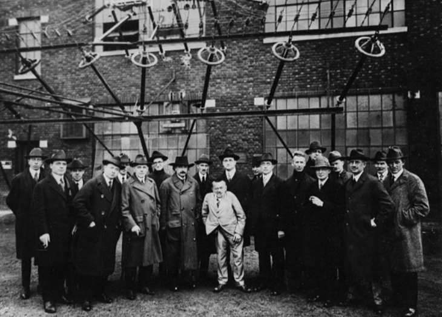
1921. Albert Wallace Hull invented the magnetron as a powerful transmission tube.
1922. The two electrical engineers Albert H. Taylor and Leo Crawford Young from the Naval Research Laboratory (USA) locate a wooden ship for the first time.
Alfred Hoyt Taylor (1879 to 1961) was an American electrical engineer. Alfred Hoyt Taylor and Leo Crawford Young made the first US observations of the radio reflection phenomenon that led to the creation of radar in the United States Navy.
Under the direction of Taylor, the Naval Radio Research Laboratory conducted studies in radio communication. Taylor, assisted by Young, had by 1922 pushed his experiments to frequencies of 60 megacycles by utilizing superheterodyne receiving circuits. While working at these frequencies during the summer of that year, Taylor and Young first noted the reflection of signals from vessels passing on the Potomac River and discovered the possibility of obtaining the ranges and bearings of these vessels. This was in fact the rediscovery of radar, called by Taylor at the time the detection of enemy ships and aircraft. In September 1922 he addressed a letter to the Bureau of Engineering requesting authority to exploit this discovery, stating that the equipment should work during darkness and low visibility as well as on a bright sunny day. Surprisingly, Taylor was not authorized to continue his radar research at that time.
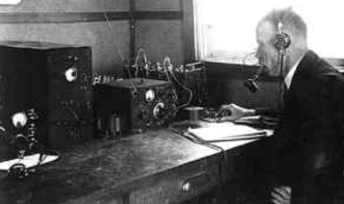
Leo Crawford Young (1891 to 1981) was an American radio engineer.
Young was interested in wireless telegraphy in his teenage years. He constructed his first radio receiver in 1905. Young enlisted as a radio specialist in the Naval Reserve Force during World War I. He worked under the direction of Dr. A. Hoyt Taylor, then district director of naval communications. In 1918 Young was ordered to Washington to join in the establishment of a new agency, the Naval Aircraft Radio Laboratory.
Both men were reunited in 1919 when Taylor was placed in command of the Naval Aircraft Radio Laboratory. During 1922, Taylor and Young had registered an historic observation of high-frequency radio waves reflecting from the wooden steamer Dorchester on the Potomac River as it passed between a transmitter and a portable receiver. This led to a CW radar development project.
In 1930, Leo Young was placed in charge of a research project at the Naval Research Laboratory (NRL) that resulted in the first detection of aircraft by reflected radio waves. Four years later, he was responsible for research that led to the development of the first system using radio pulses for range determination by runtime measuring.
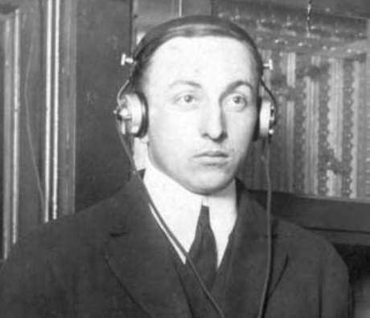
The technical conditions we call CW radar today, and relative movement between the radar equipment and its target, were necessary in order to detect the subject targets.
1930. Lawrence A. Hyland, also of the NRL (USA), locates an aircraft for the first time.
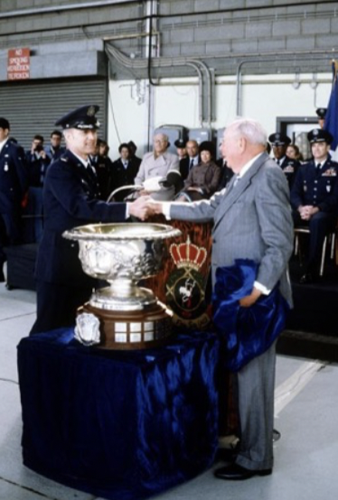
1931. William Butement and P. E. Pollard introduced the first British shipborne radar system. Parabolic antennas with horn radiators were used as transmitting and receiving antennas. Although good results were still being achieved over short distances, they stopped work on this project due to a lack of government support.
1933. Rudolf Kuhnhold presented a radio measuring device based on the sonar he had invented in 1931. It operates on a wavelength of 48 cm and had a transmission power of over 40 watts. The FREYA radar was developed from this test and was mass-produced as early as 1938.
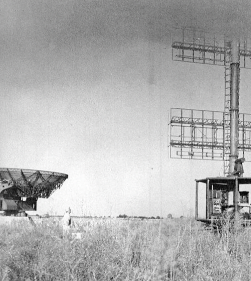
Fun fact: The FREYA radar was developed in Germany prior to WWII. It was named after the Norse goddess Freya because legend has it she could see in the dark.
1935. Robert Watson-Watt and Arnold F. Wilkins run the first practical test of an early warning radar, which could locate aircraft up to a distance of 10 km.
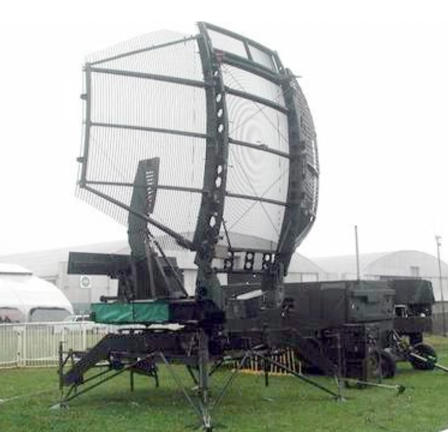
1936. George Metcalf and William Hahn of General Electric develop the klystron, which is used as a signal amplifier or oscillator.
Different radar systems are developed in the USA, Russia, Germany, France and Japan.
Driven by general war events and by the development of the air force into a significant service provider, radar technology experienced a strong development spurt during WWII and was used in large numbers along the inner-German border during the Cold War. After WWII the radar method was used in what was then known as peacetime use. Today, civil use of radar has become commonplace.
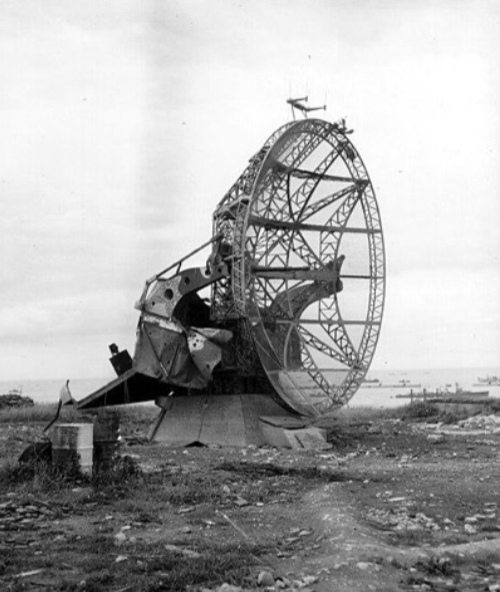
Check your understanding. Five quick questions on the milestones that built radar.
Take the interactive quiz →